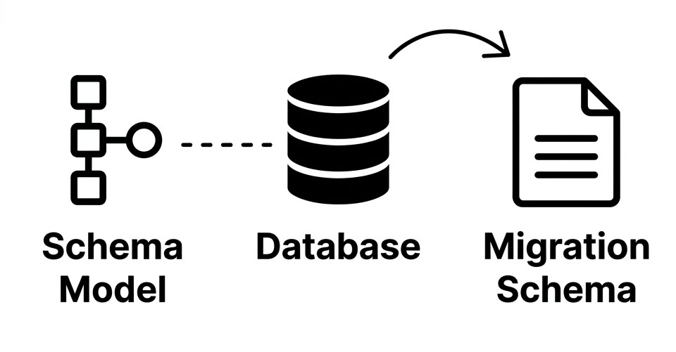
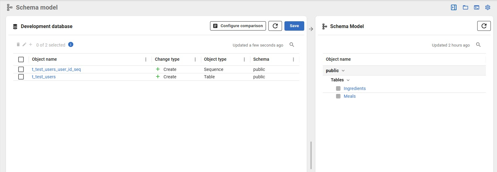
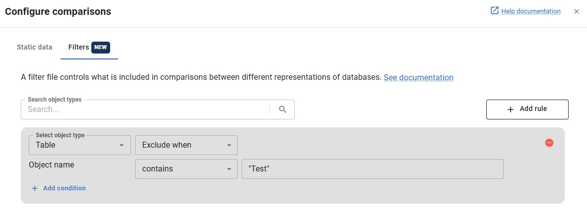

Environment-Specific Filtering in Flyway Desktop
A design exploration for Redgate
Problem and context
Flyway Desktop compares a schema model to a target database and generates migration scripts from the diffs.

Some objects should only exist in certain environments. A table like dbo.t_TestUsers might belong in Dev and Staging, but not in Prod.

dbo.t_TestUsers as a new object in Dev. This table is needed for testing but should never reach Production.Flyway's comparison filters are global. An exclude rule applies to every comparison regardless of which environment is the target. There's no way to have environment-specific filters.
This is the most-upvoted open feature request on Flyway's UserVoice board (27 votes). The requester, Simon, mentioned hundreds of databases where environment-specific objects create noise in comparisons and risk in deployments. Teams either exclude objects everywhere (losing visibility in lower environments) or leave filters off and accept noise in Prod comparisons.
What exists today
Flyway's "Configure comparison" dialog lets users set filters to include or exclude objects by type and name.

Every filter is global: the same rules apply whether you're comparing against Staging or Prod.
Exploration
I explored three approaches with different trade-offs around complexity and how much the existing UI needs to change.
The direction I'd take and why
I'd start with Option A: environment tags on filter rules.
Existing customers with complex filters are unaffected. Changes are only needed if a team wants environment-filtering. Filters stay in one place, so the mental model doesn't change.
What I'd want to check before starting
- Are CLI teams already solving this? If teams maintain separate .rgf files and pass them via CLI, Desktop needs parity.
- Can filters reference environment data? Flyway already has deployment environments with IDs and display names. I'd want to confirm with Engineering that the filter system can reference them.
- How many environment-specific rules do teams need? A handful can live in the existing UI. Dozens might need a different approach.
- How important is traceability? When a comparison result is missing an object, do teams need to understand why?
Reflection
What I did to understand the problem
I downloaded Flyway Desktop and set up a three-environment project (Dev, UAT, Prod) using PostgreSQL (SQLite isn't supported for schema model comparison). I created schema changes, generated migration scripts, and ran them across environments. I also reviewed Redgate's documentation and UserVoice requests.
Assumptions I'm making
- Simon's request is representative of a broader pattern. It has the most votes, but I don't have access to support tickets, customer interviews, or usage analytics to confirm.
- Flyway Desktop's UI is the right place to solve this, rather than alternatives that may better suit CLI-heavy teams.
What I'd do with more access
Check support tickets for filter-related complaints, interview teams who hit this friction, and review any internal research already done. I'd want to understand the engineering constraints early because what's feasible shapes the design. Then prototype and test with users.